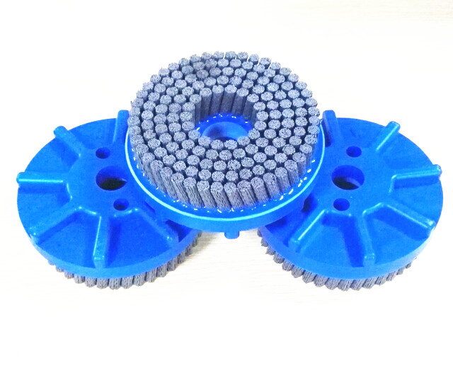

Choose the contact
Carbon steel, stainless steel, brass and abrasive nylon fills can be considered according to removal requirement, contamination sensitivity and surface condition.
Home / Industrial wheel brushes
CUSTOM WHEEL BRUSHES
For deburring, surface cleaning, rust and scale removal, or controlled finishing, a wheel brush needs to match the workpiece, machine and target result—not only a catalogue diameter.
Request a technical review
Carbon steel, stainless steel, brass and abrasive nylon fills can be considered according to removal requirement, contamination sensitivity and surface condition.
Outside diameter, face width, trim, density and crimped or twist-knot construction affect access, aggression and finish consistency.
Specify bore, keyway, hub profile or threaded arbor together with the machine or spindle details before a final design is approved.
BUYER INPUTS
A useful RFQ reduces trial-and-error by connecting the brush to the job, from the contact area through to the mounting method.
| Operation | Deburring, cleaning, scale removal, spatter removal or finishing |
|---|---|
| Workpiece | Material, profile, contamination or burr, and sensitive areas |
| Machine | Tool or spindle, RPM and mounting interface |
| Target result | Required removal level and acceptable surface change |
| Reference size | Target diameter, face width, bore or drawing/sample if available |
Share photos, a drawing or the current brush together with the application. Final specification is reviewed against the intended process.